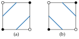
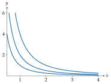

Level sets
Indifference curves, isoquants and contour lines are level sets of a function of two variables.
Level sets and their tangents
Definition · Level set
For \(F : \mathbb{R}^2 \to \mathbb{R}\) and a level \(c \in \mathbb{R}\), the level set is
For a continuously differentiable \(F\), write \(F_x\) and \(F_y\) for its partial derivatives and \(\nabla F = (F_x, F_y)\) for its gradient. Near a point with \(\nabla F \ne 0\) the level set is a curve. This follows from the implicit function theorem, which is quoted here in the form that is needed.
Theorem · Implicit function theorem
Let \(\Omega \subset \mathbb{R}^2\) be open, \(F : \Omega \to \mathbb{R}\) continuously differentiable, \(p \in \Omega\), \(F(p) = c\) and \(F_y (p) \ne 0\). Then there are open intervals \(I\) and \(J\) with \(p_x \in I\), \(p_y \in J\) and \(I \times J \subset \Omega\), and a continuously differentiable \(\phi : I \to J\) with \(\phi(p_x) = p_y\), such that for \((x, y) \in I \times J\)
The theorem holds for any number of variables; see Theorem 9.28 of Rudin (1976), Theorem 13.7 of Apostol (1974) (second edition) and Theorem 9.2 of Munkres (1991). It is not proved here.
Theorem · Tangent of a level set
Let \(F\) be continuously differentiable on an open set \(\Omega \subset \mathbb{R}^2\), \(p \in \Omega\), \(F(p) = c\) and \(\nabla F(p) \ne 0\). Then there are an open neighbourhood \(N\) of \(p\) and a continuously differentiable curve \(\gamma : I \to \mathbb{R}^2\) on an open interval \(I\) with \(\gamma(I) = L_c \cap N\), \(\gamma(u_0) = p\) for some \(u_0 \in I\), and \(\gamma'(u) \ne 0\) for all \(u \in I\), such that \(\gamma'(u)\) is parallel to \((F_y, -F_x)\) at \(\gamma(u)\). The vector \((F_y, -F_x)\) is orthogonal to \(\nabla F\).
The tangent \((F_y, -F_x)\) needs no division, so a vertical tangent (\(F_y = 0\)) is as easy as any other, although the slope \(\mathrm{d} y / \mathrm{d} x = -F_x / F_y\) of the graph form is infinite there.
Tracing
trace_implicit turns level sets into cubic paths without solving for \(y\),
so it handles curves that turn back, close up or break into several pieces.
trace_implicit(
function,
*,
levels,
viewport,
resolution=(101, 101),
tolerance=1e-2,
gradient=None
)\(F\), called with two floats; it must be finite at every grid point, or ValueError is raised.
One level or an iterable of finite levels.
Grid points along \(x\) and \(y\), at least 2 each.
Allowed deviation, in coordinate units, of the simplified and curved segments.
\(\nabla F = (F_x, F_y)\), as a pair or a Vector. When given, straight pieces are bent into cubics that follow the curve's tangent.
Trace \(F(x, y) = c\) for each level \(c\) inside the rectangle viewport
\(= (x_{\min}, x_{\max}, y_{\min}, y_{\max})\), in bezierkit.implicit.
The algorithm is marching squares, the two-dimensional analogue of the marching cubes of Lorensen (1987). A grid cell has corners \(v_{00}, v_{10}, v_{11}, v_{01}\), counter-clockwise from the lower left, with values \(f_{00}, f_{10}, f_{11}, f_{01}\) of \(F\). A corner is high if its value is at least the level \(c\).
Definition · Edge crossing
Let a grid edge run from \(p\) to \(q\) with \(F(p) \ge c > F(q)\) or \(F(q) \ge c > F(p)\). Its crossing point is \(p + \lambda (q - p)\) with
the zero of the linear interpolant of \(F - c\) along the edge.
An edge has a crossing exactly when its two corners differ in being high.
- Sample. Evaluate \(F\) on a regular grid of the viewport.
- March. In each grid cell, find the crossings of its four edges (Edge crossing). A cell with two crossings contributes one line piece. A cell with four crossings is a saddle: two opposite corners are high, the other two low, and the rule below decides which crossings to join (Saddle cell, centre (a) high, (b) low; filled corners have \(F \ge c\).).
- Stitch. Join pieces that share an end point into chains. A chain that returns to its start is closed; one that reaches the viewport's edge or a branch point is open. Disconnected components stay separate paths.
- Simplify. Reduce each chain with
fit_polylineattolerance(Fitting), without corner preservation. - Bend (with
gradient). Replace each straight piece by a cubic whose end tangents follow the level set (Tangent of a level set), with handles one third of the chord long. The cubic is kept only if it stays withintoleranceof the chord; where \(\nabla F = 0\) at either end, the piece stays straight.

The saddle rule uses the bilinear interpolant of the four corner values,
Proposition · Centre of the bilinear interpolant
The interpolant \(u\) takes the corner values at the corners, and its value at the centre of the cell is the mean of the four corner values,
The package calls the centre high when this mean is at least \(c\). In a saddle cell the two corners that are on the same side of \(c\) as the centre are then connected through the cell, and each of the other two corners is cut off by a line piece of its own (Saddle cell, centre (a) high, (b) low; filled corners have \(F \ge c\).). This is the midpoint decider Athawale (2019). The asymptotic decider of Nielson (1991) compares the value of \(u\) at its saddle point instead,
and the two rules differ only when \(u^*\) and the mean lie on opposite sides of \(c\).
from bezierkit.implicit import trace_implicit
contours = trace_implicit(
lambda x, y: x**2 * y,
levels=[1, 2, 4],
viewport=(0.5, 4, 0, 6),
resolution=(121, 121),
tolerance=0.01,
gradient=lambda x, y: (2 * x * y, x**2),
)
# (1.0, 2.0, 4.0)
print(contours.level_values)
# 15
print(len(contours.for_level(4)[0].segments))

Results
ContourSettrace_implicit returns a ContourSet whose contours hold one
LevelContours per level, in the order given. level_values lists the
levels, paths all paths together, and for_level(c) the paths of one
level (KeyError if it was not traced).
LevelContoursThe level and its paths, one PiecewiseBezier per connected
component.
Limitations
The traced curve is exact only at the grid crossings; between them it is the
piecewise-linear marching-squares curve, simplified and bent within
tolerance. Raise resolution and lower tolerance for a closer match.
Features smaller than a grid cell can be missed, and the saddle rule picks
one of the two possible connections. Kinks such as the corner of a Leontief
indifference curve are rounded to within the grid spacing, since the grid
sees no exact corner.